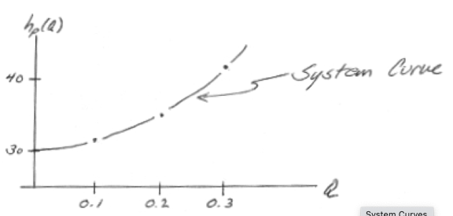
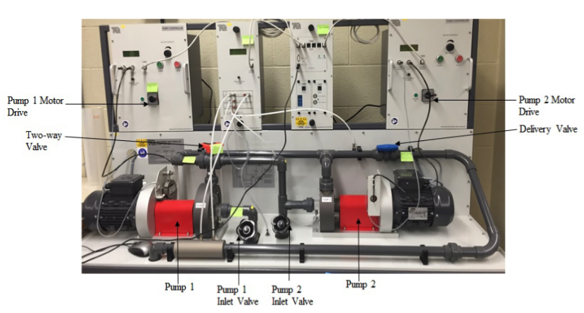

7. Pump Performance¶
This laboratory determines performance characteristics of two mechanically identical pumps in various flow configurations.
Background¶
What is a pump?¶
A mechanical device that transfers mechanical energy to move fluid
Lift from lower to higher elevation (Lift stations)
Increase pressure (Booster stations)
Pump Types:
Positive Displacement Pumps (e.g. Archimedes Pumps; Piston Pumps; Progressive Cavity Pumps)
Fixed volume of fluid is displaced each cycle regardless of static head/pressure
Low flow rates and higher head than variable displacement pumps -Variable Displacement Pumps (e.g. Axial Pumps; Centrifugal Pumps)
Volume of fluid is dependent on static head/pressure in system (back pressure)
Pump Hydraulics¶
Individual pump performance is based on information from the manufacturer on the performance of pumps in the form of curves. Information typically includes:
discharge on the x-axis
head on the left y-axis
pump power input on the right y-axis
pump efficiency as a percentage
speed of the pump (rpm)
NPSH of the pump
Pumps are selected to match system hydraulics (below) for an effective design.
System Hydraulics¶
A system (characteristic) curve is a plot of required head versus flow rate in a hydraulic system (H vs. Q) The curve depicts how much energy is necessary to maintain a steady flow under the supplied conditions Total head, \(H_p\), = elevation head + head losses

The system curve is the graphical representation of the system hydraulics such as

Pump Performance/Selection¶
A pump is selected to intersect a system curve at a desired design flow rate (usually a range of flows, but a single operating point is fine for discussion) like in the figure below

Different pumps perform differently

if more flow is desired, usually have to sacrifice added head. If more head is desired usually have to sacrifice flow. Hence in many cases multiple pumps are employed to increase pump station flexibility:

Parallel pumps increase total flow rate at about the same added head.
Series pumps increase added head at about the same flow rate.
Laboratory 7 uses two identical pumps in a flow circuit that allows either pump to operate independently, or both pumps to operate in series, or parallel configurations.
Apparatus Overview¶
The machine is comprised of two pumps with special arrangements of pipework and valves. It is possible to set the pumps in single, parallel and series connections. Water is pumped from a reservoir through one-way valves and strainers. Water flows through inlet valves, pumps, pipework arrangement and directional valves before it goes through the venturi meter back to the reservoir. Pressures readings at different locations in the pipework and across the venturi meter can be observed in digital display. Flow can be calculated using the venturi meter. The pipe flow schematic is shown below

A photograph of the test station is annotated in the figure below

Total head is related to the pressure change across the pump:
It is the difference between the outlet and inlet pressures for single test (with pump 1).
For the parallel pump it is the difference between the combined outlet pressure and the average of the two inlet pressures.
For the series connection, it is the difference between outlet pressure of the second pump and the inlet pressure of the first pump.
The total input power (mechanical power) is
The motor drive display calculates the power automatically.
The hydraulic power or the horsepower of the pump is
The overall efficiency of the pump is
The flowrate can be calculated directly from the pressure drop along the venturi:
Dimensionlal analysis and similarity laws are often used to represent the performance of a morphologically similar class of pump.
The useful dimensionless groups for homologous pumps (similar morphology) are:
\[C_Q = \frac{Q}{ND^3}\]\[C_H = \frac{gH}{N^2D^2}\]\[C_P = \frac{W_2}{\rho N^3 D^5}\]\[Re_D = \frac{\rho N D^2}{\mu}\]\[N \text{ is in radians per second.}\]
These dimensionless groups will allow you to plot your data onto a single chart for a given design, usually Reynolds number is on the horizontal axis and the dimensionless group on the vertical axis.
The relevant variables for the apparatus are: